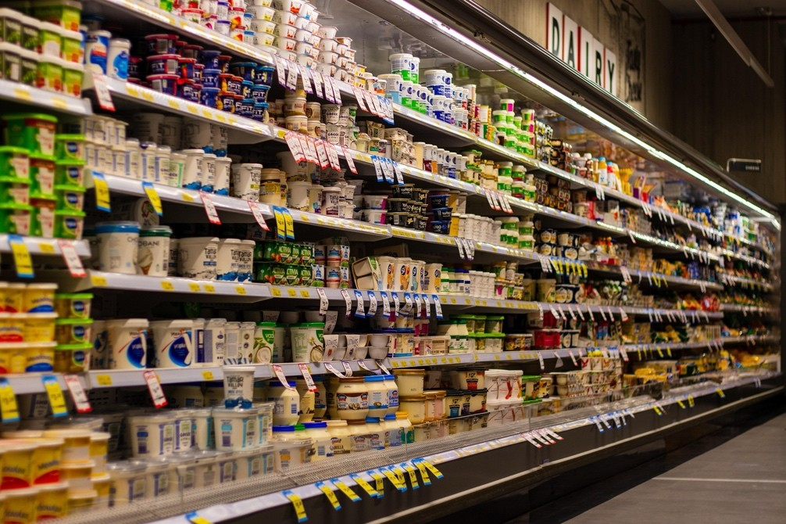

Daily Life

Managing Money
Managing money is very important for students living abroad. Many international students use online services to send or receive money between their home country and the United States.
Opening a U.S. bank account is also helpful for managing daily expenses and receiving payments.
Shopping and Daily Needs
Shopping in the United States is usually convenient because many stores offer a wide variety of products.
Walmart is one of the most common stores where students buy groceries, household items, and daily necessities.
Online shopping platforms such as Amazon are also popular because they deliver products directly to your home or dorm.
Phone and Internet
Having a reliable phone plan is important for communication and daily activities.
Many students use Mint Mobile, which offers affordable phone plans for students who want to save money.
Some students also use a VPN service to access certain websites or increase their internet privacy.